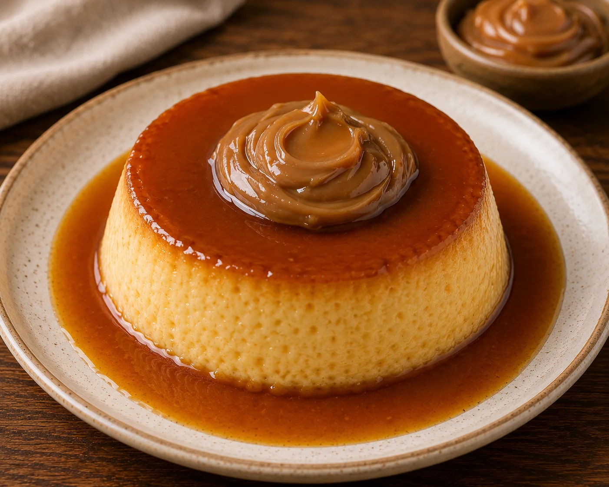

Home
Flan con Dulce de Leche Recipe

Description
Flan is the dessert that closes every serious Argentinian Sunday lunch. A baked custard with a caramelised sugar top, served with a generous spoonful of dulce de leche (the Argentinian addition that makes it unmistakably Argentinian) and a cloud of thickened cream. Spanish colonisers brought the recipe. Argentinian grandmothers perfected the combination.
This is simple cooking but requires precision. The custard has to be smooth, not grainy. The caramel has to coat the bottom of the pan without burning. The bain-marie has to be gentle. Nothing technical, just attentive.
This recipe serves 8 to 10 and must be made the day before. Flan needs a full night in the fridge to set completely.
Ingredients
For the caramel
- 200 g caster sugar
- 3 tbsp water
For the custard
- 1 tin sweetened condensed milk (395 g)
- 1 tin evaporated milk (400 ml)
- 6 large eggs
- 1 tbsp vanilla essence
- Pinch of salt
To serve
- 300 g dulce de leche (repostero grade)
- 300 ml thickened cream, whipped
- Fresh berries (optional)
Steps
- Make the caramel: In a small heavy-bottomed saucepan, combine the sugar and water. Heat over medium heat without stirring (swirl the pan occasionally) until the sugar dissolves and then caramelises to a deep amber. This takes 6 to 8 minutes. Watch carefully, it can burn in seconds.
- Pour into the tin: Immediately pour the hot caramel into a 22 cm round cake tin or flan mould. Tilt the tin to coat the bottom evenly. Set aside to harden.
- Make the custard: In a large bowl, whisk together the condensed milk, evaporated milk, eggs, vanilla, and salt. Mix until fully combined but not frothy. Strain through a fine sieve into a jug, this removes any lumps and gives you a silkier flan.
- Pour over caramel: Pour the strained custard gently into the caramel-lined tin.
- Set up the bain-marie: Preheat oven to 160°C. Place the flan tin inside a larger roasting tin. Pour boiling water into the roasting tin to come halfway up the sides of the flan tin.
- Bake: Bake for 45 to 55 minutes, until the custard is set but still has a slight wobble in the centre when gently shaken. Do not overbake, a set-solid flan is overcooked.
- Cool and chill: Remove from the bain-marie. Cool to room temperature. Cover and refrigerate for at least 6 hours, ideally overnight.
- Unmould: Before serving, run a knife around the edge of the flan. Place a serving plate with a raised rim upside down over the tin. Holding firmly, invert in one quick motion. The flan should slide out, and the caramel will pool around it. If stuck, dip the base briefly in hot water.
- Serve: Slice into wedges. Serve each wedge with a generous spoonful of dulce de leche and a cloud of whipped cream. Optional: fresh berries for colour.